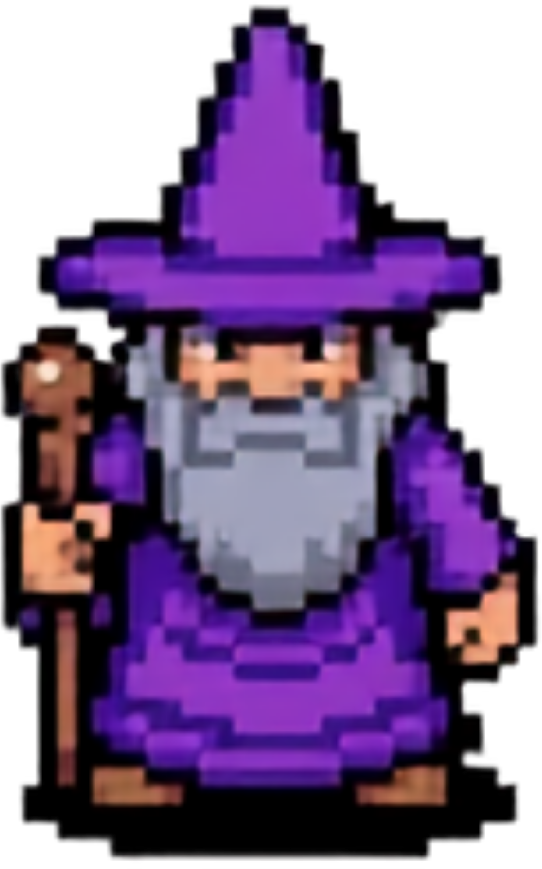

Mission briefing
Beta Briefing
Before you enter the beta, here is what you are testing and how to play.

What this game is
Mission: Reinforceable is a game-based practice tool for behavior support decisions. You’ll move through short classroom scenarios, choose a response, and receive feedback about how that choice connects to the student’s behavior plan.

What this will look like for teachers
In the dissertation version, each teacher’s game will be built around their own student, classroom routine, and behavior support plan. The missions are designed to help teachers rehearse plan-aligned responses before similar moments happen during the school day.

What beta testers should do
For this beta, you are testing the game experience itself. As you play, notice what feels clear, confusing, fun, clunky, too easy, too hard, or broken. Your feedback will help improve the game before it is used in the dissertation study.
Ready to enter the beta?
Ready to enter the beta?
The current beta is best on a desktop or laptop, but it can also be opened on a phone or tablet.